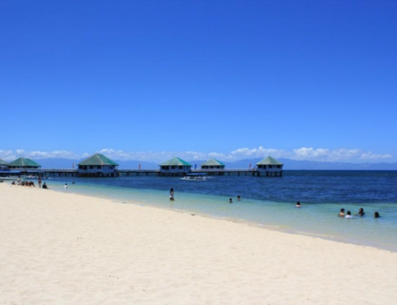
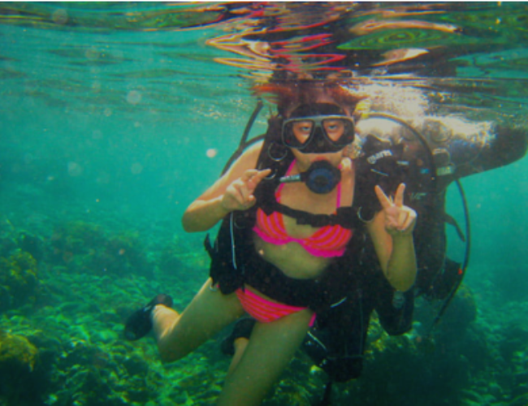
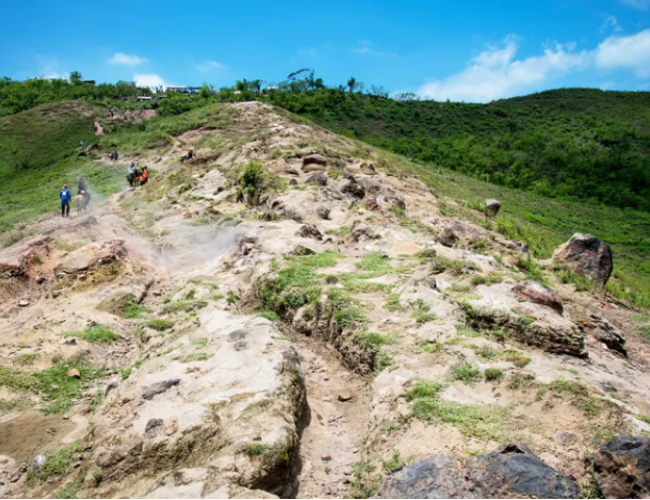
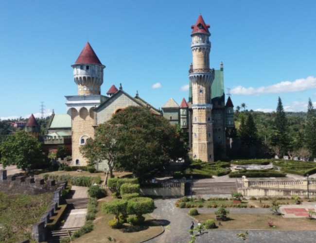
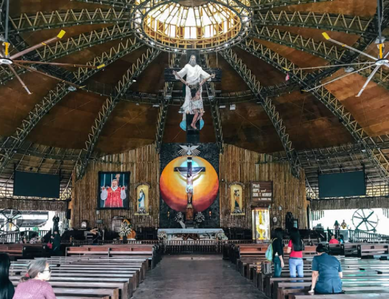

Swim

Beach bumming and swimming are the main draw of Batangas, with many of the best beaches near Manila found here. Some of our favorites include the charming Burot Beach (Calatagan), Fortune Island (Nasugbu), Laiya (San Juan), and Masasa Beach (Tingloy). Looking to escape Luzon altogether? If you have a few days to spare for travel, sail to one of the best beaches in the Philippines with a ferry ride from Batangas to Boracay.
Batangas–Caticlan Starlite Ferry Tickets | Philippines
Hop on the Starlite Ferry and travel to two of the Philippines’ top beach destinations, Batangas and Caticlan.
Try Water Sports

Beach lovers interested in more active pursuits will enjoy the various water sports that Batangas offers. Anilao is a world-class scuba diving and snorkeling destination, while Lago de Oro in Calatagan is one of the premier spots for cable wakeboarding in the Philippines. Kayaks are also available in many beachfront resorts.
Hike

The mountains of Batangas are just as spectacular the province’s beaches. There are many options for travelers planning a hike, even if you’re a first-time climber. Mt. Batulao (Nasugbu) is a popular option with manageable trails, views of the Balayan Bay, and proximity to Tagaytay—perfect for after-climb meals! The steep Mt. Maculot (Cuenca) is also well-loved for the picturesque “Rockies” at the top, while Mt. Gulugod Baboy (Mabini) is a beginner-friendly mountain with gently sloping trails and views of Balayan and Batangas Bay.
Check Out Theme Parks

Batangas isn’t particularly known for theme parks, but there’s an abandoned theme park in the province that’s strangely appealing: the unfinished Lemery Castle at the abandoned Fantasy World. The deserted park is oddly picturesque, a perfect stopover for pictures and a little bit of sightseeing.
Tagaytay’s family-friendly parks are also a quick drive from many places in Batangas. Philippine Zoori is one tourist attraction that’s perfect for kids and kids at heart with views of Taal Volcano and a fairytale-like mini zoo.
Philippines Zoori Attraction Ticket
Take in the picturesque scenery of Taal Volcano, while exploring a fairytale-inspired mini zoo at Zoori.
Visit Churches

The beautiful old churches of Batangas are also worth a visit, whether you’re in town for the traditional Visita Iglesia or not. For one, it’s always a treat to see the majestic Taal Basilica, known as the largest Catholic church in Asia. The 16th-century Bauan Church and 18th-century Balayan Church are two of the must-visit places of worship in Batangas, while the popular Calaruega Church is a beautiful space for prayer and weddings.
You could even drive further to explore the churches and other attractions in nearby provinces like Laguna, Cavite, and Rizal.
2021 List of DOH-Accredited & Licensed COVID-19 TESTING CENTERS
How to Get an INTERNATIONAL CERTIFICATE OF VACCINATION from BOQ Philippines
How to Get a VACCINE CERTIFICATE Online (Step-by-Step Guide for Filipinos)
How to Get S-PASS: TRAVEL COORDINATION PERMIT (TCP)